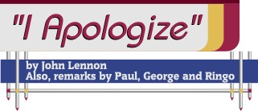

|
 One of the more interesting and significant collectibles that has been circulating amongst collectors since 1966 is a vinyl lp recording of a press conference held the evening of August 11th 1966 on the 27th floor of the Astor Towers Hotel in Lakeside Chicago. This was the day before the start of another United States tour. The main topic of this press conference was Lennon's 1965 statement "We're more popular than Jesus." Lennon, supported by the other Beatles, tried to placate the American public about his famous statement. The "I Apologize" album was a result of this event. In its original context, the remark was part of a rather harmless life-style piece by Evening Standard reporter Maureen Cleave. She had spent the day with Lennon, whom she described as "imperious ... unpredictable, indolent, disorganized, childish, vague, charming and quick-witted." He took her on a tour of his mansion, talking about books and fame, and the gorilla suit he bought so he could drive around wearing it. When they reached the subject of religion, Lennon said, "Christianity will go. It will vanish and shrink. ... We're more popular than Jesus now; I don't know which will go first-rock 'n' roll or Christianity. Jesus was all right but his disciples were thick and ordinary. It's them twisting it that ruins it for me." The British public took the comment as what is was: An opinion voiced by an artist known as much for his hummingbird mind as for his considerable talent. In July, however, an American teen magazine called Datebook quoted the infamous Jesus statement without reprinting the original article. It appeared as part of a cover story called "The Ten Adults You Dig/Hate the Most." The American reaction was instantaneous. Radio stations across the country, but especially in the South and in the Midwest, stopped playing Beatles records. Death threats began pouring in, directed against not only John, but the other Beatles as well. Bonfires appeared, with Beatles pictures and albums providing the fuel. Maureen Cleave tried to explain that "John was certainly not comparing the Beatles with Christ. He was simply observing that so weak was the state of Christianity that the Beatles were, to many people, better known. He was deploring, rather than approving, this," but to no avail. Finally, on August 11, with a scheduled American tour fast approaching, Lennon held a press conference in Chicago, at which he attempted to make amends. "I'm not saying that we're better or greater," he said, "or comparing us with Jesus Christ as a person or God as a thing or whatever it is. ... I wasn't saying whatever they're saying I was saying. I'm sorry I said it really. I never meant it to be a lousy anti-religious thing. I apologize if that will make you happy. I still don't know quite what I've done. I've tried to tell you what I did do but if you want me to apologize, if that will make you happy, then OK, I'm sorry." Some information and text above are taken from Mark Lewisohn's book, the Complete Beatles Chronicles and from a web site called, News of the Odd. My thanks to those people. Below are various scans of this recording by Sterling Productions. The vinyl was pressed by RCA Custom Recordings. My thanks to Perry Cox for the scan of the acetate label. Originally included with this album was an 8x10 glossy black and white photo of the Beatles at the press conference. Click here for an audio sample.(mP3 - 281k) Click on scans for larger views |
||||||||
|

{kind=link}
{kind=link}
{kind=link}